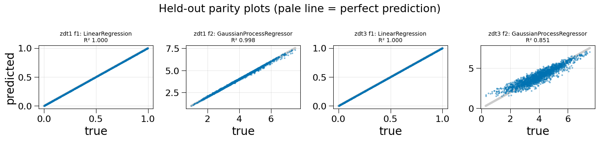
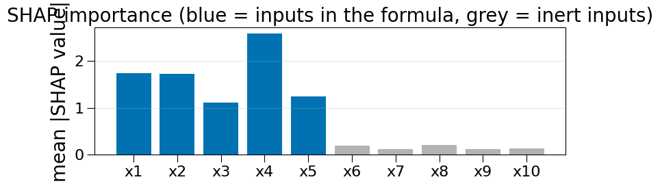
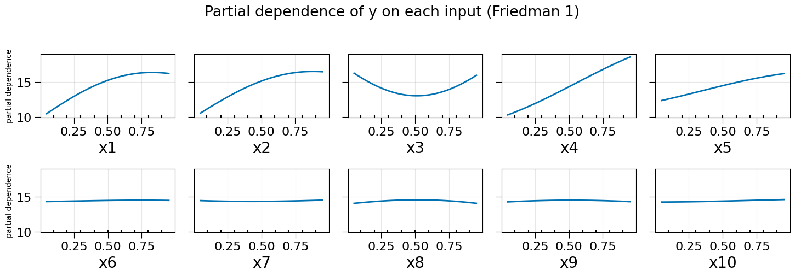
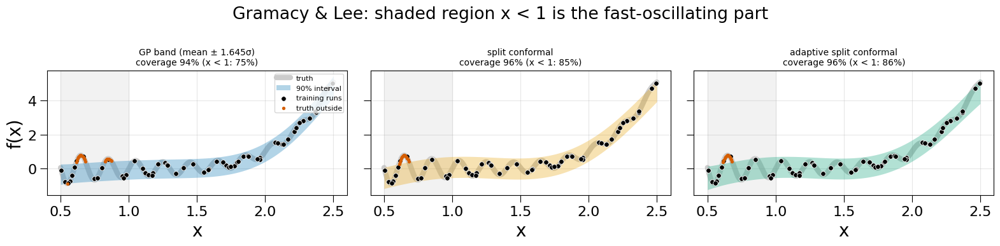
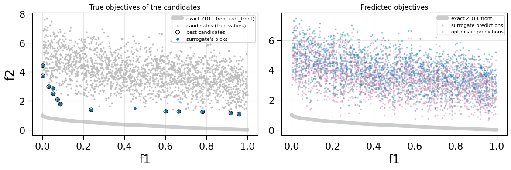

Multi-Output Surrogates, Start to Finish¶
This tutorial walks through the core single-fidelity workflow on analytic benchmarks whose true answer is known everywhere, so every step can be checked rather than taken on trust:
Per-output model selection:
AutoDetectMultiOutputRegressorpicks a model for each output (ZDT1 and ZDT3).Explanations against a known answer: SHAP values and partial dependence on Friedman 1, where only five of the ten inputs matter.
Uncertainty you can trust: a GP’s intervals and conformal intervals on the non-stationary Gramacy & Lee function.
Scoring a surrogate for optimization: Pareto-front regret on ZDT1, with the exact front from
zdt_front.Summary and next steps
All benchmarks come from multioutreg.active.benchmarks (get_benchmark(name) returns the function, its bounds and a sampler). The whole notebook runs in about two minutes.
[1]:
import warnings
warnings.filterwarnings("ignore") # GP optimizer convergence chatter
import matplotlib.pyplot as plt
import numpy as np
import pandas as pd
import shap
from sklearn.ensemble import GradientBoostingRegressor, RandomForestRegressor
from sklearn.gaussian_process import GaussianProcessRegressor
from sklearn.inspection import PartialDependenceDisplay
from sklearn.linear_model import LinearRegression
from sklearn.neighbors import KNeighborsRegressor
from sklearn.pipeline import make_pipeline
from sklearn.preprocessing import StandardScaler
from multioutreg.active.benchmarks import get_benchmark, zdt_front
from multioutreg.conformal import SplitConformalPredictor
from multioutreg.metrics import front_hypervolume_regret, hypervolume_regret, pareto_mask
from multioutreg.model_selection import AutoDetectMultiOutputRegressor
from multioutreg.surrogates import GaussianProcessSurrogate
from multioutreg.surrogates.gp_sklearn import default_gp_kernel
# Plot styles: the true function is a wide pale band drawn underneath,
# models are thinner coloured lines on top, data points sit above both.
TRUTH = {"color": "0.8", "lw": 6, "zorder": 1, "solid_capstyle": "round"}
TRAIN = {"s": 30, "color": "black", "edgecolor": "white", "linewidth": 0.6, "zorder": 4}
BLUE, ORANGE, GREEN, PINK = "#0072B2", "#E69F00", "#009E73", "#CC79A7"
def r2(Y_true, Y_pred):
# R^2 per output column.
return 1 - ((Y_true - Y_pred) ** 2).sum(0) / ((Y_true - Y_true.mean(0)) ** 2).sum(0)
def model_name(est):
# Readable name of a fitted estimator (the last step of a pipeline).
return type(est.steps[-1][1] if hasattr(est, "steps") else est).__name__
## 1. Per-output model selection
AutoDetectMultiOutputRegressor grid-searches every candidate on every output with the same cross-validation folds and keeps the best one per output. Different outputs of the same simulator are often very different problems, and one model family rarely suits all of them.
ZDT1 and ZDT3 (Zitzler, Deb & Thiele 2000) make that concrete. Both have two outputs over \(x \in [0, 1]^6\):
output 1 is \(f_1 = x_1\), a plane;
output 2 is \(f_2 = g\,h(f_1 / g)\) with \(g = 1 + \tfrac{9}{5}\sum_{i \ge 2} x_i\), which is curved in \(x_1\) and, for ZDT3, oscillates with \(\sin(10\pi x_1)\).
The candidate list below is short so the notebook runs quickly: a linear model, a GP, a random forest, gradient boosting and KNN, with small grids. In practice, AutoDetectMultiOutputRegressor.with_vendored_surrogates() searches 18 or more families, which takes minutes rather than seconds on data this size; pre_screen=True skips families the data does not justify. With cv="auto" (the default) the cross-validation scheme is chosen from the number of rows: 80 rows gives 5-fold CV
repeated 3 times.
[2]:
def candidates():
# (estimators, parameter grids) for AutoDetectMultiOutputRegressor.
estimators = [
LinearRegression(),
make_pipeline(StandardScaler(), GaussianProcessRegressor(kernel=default_gp_kernel(), normalize_y=True)),
RandomForestRegressor(n_estimators=200, random_state=0),
GradientBoostingRegressor(random_state=0),
make_pipeline(StandardScaler(), KNeighborsRegressor()),
]
grids = [{}, {}, {"max_depth": [None, 6]}, {"max_depth": [2, 3]},
{"kneighborsregressor__n_neighbors": [3, 7]}]
return estimators, grids
fitted, test_sets, rows = {}, {}, []
for name in ["zdt1", "zdt3"]:
bench = get_benchmark(name) # 6 inputs by default (n_features=...)
X = bench.sample(80, method="lhs", seed=0) # 80 training runs
Y = bench(X)
X_test = bench.sample(2000, method="random", seed=1)
Y_test = bench(X_test)
model = AutoDetectMultiOutputRegressor(*candidates()).fit(X, Y)
fitted[name], test_sets[name] = model, (X_test, Y_test)
scores = r2(Y_test, model.predict(X_test))
for j, sel in enumerate(model.selection_scores_):
ranked = sorted(sel.items(), key=lambda kv: -kv[1]["mean"])
rows.append({
"problem": name, "output": f"f{j + 1}",
"chosen": model_name(model.models_[j]),
"CV MSE (chosen)": -ranked[0][1]["mean"],
"runner-up": f"{ranked[1][0]} ({-ranked[1][1]['mean']:.4f})",
"held-out R²": scores[j],
})
print("CV scheme:", fitted["zdt1"].cv_description_)
pd.DataFrame(rows).round(4)
CV scheme: Repeated 5-Fold CV (x3 repeats)
[2]:
| problem | output | chosen | CV MSE (chosen) | runner-up | held-out R² | |
|---|---|---|---|---|---|---|
| 0 | zdt1 | f1 | LinearRegression | 0.0000 | gp (0.0000) | 1.0000 |
| 1 | zdt1 | f2 | GaussianProcessRegressor | 0.0057 | linear (0.0169) | 0.9978 |
| 2 | zdt3 | f1 | LinearRegression | 0.0000 | gp (0.0000) | 1.0000 |
| 3 | zdt3 | f2 | GaussianProcessRegressor | 0.1682 | linear (0.1891) | 0.8509 |
Reading the table. On both problems the plane \(f_1\) goes to the linear model, which fits it exactly, and \(f_2\) goes to the GP. For ZDT1 the GP’s held-out \(R^2\) on \(f_2\) is close to 1. For ZDT3, 80 runs are not enough to resolve the \(\sin(10\pi x_1)\) oscillation in six dimensions, and the GP’s \(R^2\) is clearly lower: the selection is right, but the data budget is the limit. The selection_scores_ attribute holds every candidate’s cross-validated score,
so the margin between the winner and the runner-up is visible. The winner’s CV score is optimistically biased (it is the best of several); the held-out \(R^2\) is the unbiased number.
[3]:
fig, axes = plt.subplots(1, 4, figsize=(15, 3.6))
for k, name in enumerate(["zdt1", "zdt3"]):
X_test, Y_test = test_sets[name]
P = fitted[name].predict(X_test)
for j in range(2):
ax = axes[2 * k + j]
lims = [Y_test[:, j].min(), Y_test[:, j].max()]
ax.plot(lims, lims, **{**TRUTH, "lw": 4})
ax.scatter(Y_test[:, j], P[:, j], s=4, alpha=0.4, color=BLUE, zorder=2)
ax.set_title(f"{name} f{j + 1}: {model_name(fitted[name].models_[j])}\nR² {r2(Y_test, P)[j]:.3f}", fontsize=10)
ax.set_xlabel("true")
ax.grid(alpha=0.3)
axes[0].set_ylabel("predicted")
fig.suptitle("Held-out parity plots (pale line = perfect prediction)")
fig.tight_layout()
plt.show()

## 2. Explanations against a known answer
SHAP values and partial-dependence plots are only useful if they find the inputs that actually drive the output. Friedman 1 (Friedman 1991) is the standard check:
so \(x_6, \dots, x_{10}\) have no effect at all. The usual benchmark adds \(\varepsilon \sim N(0, 1)\) noise, as here, with 200 training runs.
[4]:
bench = get_benchmark("friedman1")
X_f = bench.sample(200, method="lhs", seed=0)
Y_f = bench(X_f) + np.random.default_rng(0).normal(0, 1, (200, 1))
X_ft = bench.sample(2000, method="random", seed=1)
Y_ft = bench(X_ft) # noise-free truth for scoring
friedman = AutoDetectMultiOutputRegressor(*candidates()).fit(X_f, Y_f)
feature_names = [f"x{i}" for i in range(1, 11)]
print("chosen model:", model_name(friedman.models_[0]), "| CV:", friedman.cv_description_)
print(f"held-out R² against the noise-free function: {r2(Y_ft, friedman.predict(X_ft))[0]:.3f}")
# KernelExplainer works with any model; 10 k-means centres summarise the background data.
explainer = shap.KernelExplainer(lambda Z: friedman.predict(Z)[:, 0], shap.kmeans(X_f, 10))
shap_values = explainer.shap_values(X_f[:80], nsamples=300, silent=True)
importance = pd.Series(np.abs(shap_values).mean(0), index=feature_names)
fig, ax = plt.subplots(figsize=(8, 3))
colors = [BLUE] * 5 + ["0.7"] * 5
ax.bar(feature_names, importance.values, color=colors)
ax.set_ylabel("mean |SHAP value|")
ax.set_title("SHAP importance (blue = inputs in the formula, grey = inert inputs)")
ax.grid(axis="y", alpha=0.3)
fig.tight_layout()
plt.show()
importance.round(3).to_frame("mean |SHAP|").T
chosen model: GaussianProcessRegressor | CV: 10-Fold CV (shuffled)
held-out R² against the noise-free function: 0.903

[4]:
| x1 | x2 | x3 | x4 | x5 | x6 | x7 | x8 | x9 | x10 | |
|---|---|---|---|---|---|---|---|---|---|---|
| mean |SHAP| | 1.732 | 1.72 | 1.104 | 2.581 | 1.241 | 0.192 | 0.119 | 0.2 | 0.118 | 0.135 |
Reading the result. The five inputs in the formula have importances several times those of the five inert ones. The inert inputs are not exactly zero: the model was fitted to noisy data and has learned a little spurious structure, so a small importance is not evidence that an input matters. \(x_4\) ranks first because its effect is linear with the largest range (0 to 10).
Partial dependence shows the shape of each effect: linear in \(x_4\) and \(x_5\), a parabola in \(x_3\) with its minimum at 0.5, and flat for \(x_6, \dots, x_{10}\). multioutreg.figures.pdp_plots.generate_pdp_plot and multioutreg.figures.shap_multioutput.generate_shap_plot produce the versions of these figures used in the HTML report; the latter uses SHAP’s exact explainer, which takes over a minute on ten inputs.
[5]:
fig, axes = plt.subplots(2, 5, figsize=(15, 5.2), sharey=True)
PartialDependenceDisplay.from_estimator(
friedman.estimators_[0], X_f, features=range(10), feature_names=feature_names,
ax=axes.ravel(), line_kw={"color": BLUE, "lw": 2},
)
for k, ax in enumerate(axes.ravel()):
ax.set_ylabel("partial dependence" if k % 5 == 0 else "", fontsize=10)
ax.grid(alpha=0.3)
fig.suptitle("Partial dependence of y on each input (Friedman 1)")
fig.tight_layout(rect=(0, 0, 1, 0.95))
plt.show()

## 3. Uncertainty you can trust
A surrogate’s intervals are only useful if they contain the truth about as often as they claim. The Gramacy & Lee (2012) function on \([0.5, 2.5]\),
oscillates quickly on the left and is smooth on the right. A stationary GP has one length scale for the whole range, so its error and its claimed uncertainty cannot both be right on both sides. 60 noisy runs (\(\sigma = 0.05\)) are used, and coverage is measured separately on the wiggly part (\(x < 1\)) and the smooth part.
Three kinds of 90% interval are compared:
the GP’s own band, mean ± 1.645σ, from
GaussianProcessSurrogate.predict(return_std=True);split conformal (
SplitConformalPredictor), which holds out 30% of the runs, takes the 90% quantile of their absolute residuals, and adds that constant width everywhere;adaptive split conformal (
adaptive=True), which scales the width by the model’s σ.
[6]:
bench = get_benchmark("gramacy_lee")
X_g = bench.sample(60, method="random", seed=0)
Y_g = bench(X_g) + np.random.default_rng(0).normal(0, 0.05, (60, 1))
x_grid = np.linspace(0.5, 2.5, 400)[:, None]
y_grid = bench(x_grid)
wiggly = x_grid[:, 0] < 1.0
gp = GaussianProcessSurrogate().fit(X_g, Y_g)
mu, sd = gp.predict(x_grid, return_std=True)
bands = {"GP band (mean ± 1.645σ)": (mu - 1.645 * sd, mu + 1.645 * sd)}
# SplitConformalPredictor clones its estimator, so it takes a scikit-learn regressor.
for label, adaptive in [("split conformal", False), ("adaptive split conformal", True)]:
cp = SplitConformalPredictor(
GaussianProcessRegressor(kernel=default_gp_kernel(), normalize_y=True),
calibration_size=0.3, adaptive=adaptive, random_state=0,
).fit(X_g, Y_g)
lo, hi = cp.predict_interval(x_grid, alpha=0.1)
bands[label] = (np.reshape(lo, (-1, 1)), np.reshape(hi, (-1, 1)))
rows = []
for label, (lo, hi) in bands.items():
inside = ((y_grid >= lo) & (y_grid <= hi)).ravel()
width = (hi - lo).ravel()
rows.append({"interval": label, "coverage (all)": inside.mean(),
"coverage x < 1": inside[wiggly].mean(), "coverage x ≥ 1": inside[~wiggly].mean(),
"width x < 1": width[wiggly].mean(), "width x ≥ 1": width[~wiggly].mean()})
pd.DataFrame(rows).set_index("interval").round(3)
[6]:
| coverage (all) | coverage x < 1 | coverage x ≥ 1 | width x < 1 | width x ≥ 1 | |
|---|---|---|---|---|---|
| interval | |||||
| GP band (mean ± 1.645σ) | 0.938 | 0.75 | 1.0 | 1.121 | 1.109 |
| split conformal | 0.962 | 0.85 | 1.0 | 1.235 | 1.235 |
| adaptive split conformal | 0.965 | 0.86 | 1.0 | 1.252 | 1.239 |
[7]:
fig, axes = plt.subplots(1, 3, figsize=(16, 4), sharey=True)
for ax, (label, (lo, hi)), color in zip(axes, bands.items(), [BLUE, ORANGE, GREEN]):
ax.axvspan(0.5, 1.0, color="0.95", zorder=0)
ax.plot(x_grid, y_grid, **TRUTH, label="truth")
ax.fill_between(x_grid.ravel(), lo.ravel(), hi.ravel(), color=color, alpha=0.3, lw=0, zorder=2, label="90% interval")
ax.scatter(X_g, Y_g, **TRAIN, label="training runs")
inside = ((y_grid >= lo) & (y_grid <= hi)).ravel()
ax.scatter(x_grid[~inside], y_grid[~inside], s=8, color="#D55E00", zorder=5, label="truth outside")
ax.set_title(f"{label}\ncoverage {inside.mean():.0%} (x < 1: {inside[wiggly].mean():.0%})", fontsize=10)
ax.set_xlabel("x")
ax.grid(alpha=0.3)
axes[0].set_ylabel("f(x)")
axes[0].legend(fontsize=8, loc="upper right")
fig.suptitle("Gramacy & Lee: shaded region x < 1 is the fast-oscillating part")
fig.tight_layout()
plt.show()

Reading the result.
The GP’s own band misses most often on the wiggly side, where its error is largest, and covers everything on the smooth side. Its σ depends on the distance to the nearest training run, not on how hard the function is there, so it cannot know that the left is harder.
Split conformal guarantees the overall rate: on average at least 90% of new points from the same distribution fall inside (96% here). It sizes one constant width from the held-out residuals, which raises coverage on the wiggly side (75% → 85%) but not to 90%, while the smooth side, already fully covered, gets no narrower. The guarantee is marginal (averaged over \(x\)), not conditional on \(x\).
Adaptive conformal can only reshape the interval as well as the model’s σ tracks the error. A stationary GP’s σ is nearly flat on this design (the GP band is about 1.1 wide on both sides), so the adaptive version looks much like the plain one.
In practice: check coverage by region (or by output, or by predicted value) and not only overall. Conditional problems call for a model whose uncertainty can vary with \(x\) (heteroscedastic or non-stationary models, tree ensembles’ spread) or for more data where the function is hard, which is what variance-based active learning provides (see the active learning tutorial).
## 4. Scoring a surrogate for optimization
When the outputs are objectives to be minimized together, the question is not only “how accurate is the surrogate?” but “would it lead to good designs?” The ZDT1 surrogate from section 1 is used to screen 2,000 candidate designs: the candidates it predicts to be Pareto-optimal are the ones an engineer would run next.
Decision regret measures what that choice costs, using the true objective values:
where HV is the hypervolume dominated by a front up to a reference point (larger is better). hypervolume_regret(Y_true, Y_pred) computes exactly this: the picks are pareto_mask(Y_pred), and Y_true and Y_pred hold the same candidates, row for row.
front_hypervolume_regret(Y_true, Y_pred) instead compares the predicted front with the true one, \(\mathrm{HV}(\text{front}(Y_\text{true})) - \mathrm{HV}(\text{front}(Y_\text{pred}))\). That measures how well the front’s position is predicted, not whether the picks are good, and because the difference is clipped at zero, a model that is simply optimistic (predicts every design to be better than it is) can score zero.
[8]:
bench = get_benchmark("zdt1")
model = fitted["zdt1"]
X_cand = bench.sample(2000, method="random", seed=7)
Y_cand = bench(X_cand) # true objectives of every candidate
P_cand = model.predict(X_cand) # what the surrogate predicts
ref = np.array([1.1, 1.1 * Y_cand[:, 1].max()])
picks = pareto_mask(P_cand) # candidates the surrogate calls Pareto-optimal
optimistic = P_cand - np.array([0.0, 0.5]) # same ranking, every f2 predicted 0.5 too low
rng = np.random.default_rng(0)
random_picks = rng.choice(len(Y_cand), picks.sum(), replace=False)
table = pd.DataFrame({
"decision regret (true values at the picks)": {
"surrogate": hypervolume_regret(Y_cand, P_cand, reference_point=ref),
"optimistic surrogate": hypervolume_regret(Y_cand, optimistic, reference_point=ref),
# no predictions here, so score the true values of the random picks as a front
f"{picks.sum()} random candidates": front_hypervolume_regret(Y_cand, Y_cand[random_picks], reference_point=ref),
},
"front_hypervolume_regret(Y_true, Y_pred)": {
"surrogate": front_hypervolume_regret(Y_cand, P_cand, reference_point=ref),
"optimistic surrogate": front_hypervolume_regret(Y_cand, optimistic, reference_point=ref),
f"{picks.sum()} random candidates": np.nan,
},
})
print(f"surrogate picks {picks.sum()} of {len(X_cand)} candidates; "
f"{(pareto_mask(Y_cand) & picks).sum()} of the {pareto_mask(Y_cand).sum()} truly Pareto-optimal candidates are among them")
table.round(4)
surrogate picks 14 of 2000 candidates; 13 of the 13 truly Pareto-optimal candidates are among them
[8]:
| decision regret (true values at the picks) | front_hypervolume_regret(Y_true, Y_pred) | |
|---|---|---|
| surrogate | 0.0000 | 0.0417 |
| optimistic surrogate | 0.0000 | 0.0000 |
| 14 random candidates | 1.7691 | NaN |
[9]:
front = zdt_front("zdt1")
true_best = pareto_mask(Y_cand)
fig, axes = plt.subplots(1, 2, figsize=(12, 4.2), sharex=True)
ax = axes[0]
ax.plot(front[:, 0], front[:, 1], **TRUTH, label="exact ZDT1 front (zdt_front)")
ax.scatter(Y_cand[:, 0], Y_cand[:, 1], s=4, color="0.75", zorder=2, label="candidates (true values)")
ax.scatter(Y_cand[true_best, 0], Y_cand[true_best, 1], s=40, facecolor="none", edgecolor="black", zorder=3, label="best candidates")
ax.scatter(Y_cand[picks, 0], Y_cand[picks, 1], s=14, color=BLUE, zorder=4, label="surrogate's picks")
ax.set_title("True objectives of the candidates", fontsize=11)
ax.set_xlabel("f1"); ax.set_ylabel("f2")
ax.legend(fontsize=8)
ax.grid(alpha=0.3)
ax = axes[1]
ax.plot(front[:, 0], front[:, 1], **TRUTH, label="exact ZDT1 front")
ax.scatter(P_cand[:, 0], P_cand[:, 1], s=4, color=BLUE, alpha=0.3, zorder=2, label="surrogate predictions")
ax.scatter(optimistic[:, 0], optimistic[:, 1], s=4, color=PINK, alpha=0.3, zorder=2, label="optimistic predictions")
ax.set_title("Predicted objectives", fontsize=11)
ax.set_xlabel("f1")
ax.legend(fontsize=8)
ax.grid(alpha=0.3)
fig.tight_layout()
plt.show()

Reading the result. The surrogate’s 14 picks include all 13 truly best candidates, so its decision regret is zero, against a large regret for the same number of random picks. The optimistic surrogate ranks the candidates identically, so its decision regret is the same: it would lead to the same designs. The predicted-front comparison tells a different story: it charges the accurate surrogate for small errors in the front’s position, and gives the optimistic one a perfect score of zero, because its predicted front dominates the true one and the difference is clipped.
Use decision regret (true values at the picks) to judge a surrogate for optimization. Note that these candidates are random designs, which lie well above the exact ZDT1 front (left panel); regret is measured against the best of the candidates, not against the exact front.
## 5. Summary and next steps
Step |
What to use |
What the benchmark showed |
|---|---|---|
Model selection |
|
Different outputs of one problem get different models; the held-out score, not the CV score of the winner, is the honest number |
Explanations |
SHAP values, partial dependence on |
The five active Friedman inputs stand far above the five inert ones; small importances can be noise |
Uncertainty |
|
Conformal intervals fix overall coverage, not coverage where the function is hard; check coverage by region |
Optimization |
|
Score the designs the model would pick, using their true values |
Next steps
The cost-savings tutorial prices what a surrogate saves in simulator runs; the active learning tutorial chooses the training runs instead of fixing them up front.
multioutreg.report.auto_detect_report.generate_html_reportand the Streamlit GUI (streamlit run multioutreg/gui/Grid_Search_Surrogate_Models.py) turn a fitted model into an HTML report with these figures.More benchmarks are listed in
multioutreg.active.benchmarks.BENCHMARKS.
References
Zitzler, E., Deb, K., & Thiele, L. (2000). Comparison of multiobjective evolutionary algorithms: empirical results. Evolutionary Computation, 8(2).
Friedman, J. H. (1991). Multivariate adaptive regression splines. Annals of Statistics, 19(1).
Gramacy, R. B., & Lee, H. K. H. (2012). Cases for the nugget in modeling computer experiments. Statistics and Computing, 22(3).
Lundberg, S. M., & Lee, S.-I. (2017). A unified approach to interpreting model predictions. NeurIPS.
Lei, J., G’Sell, M., Rinaldo, A., Tibshirani, R. J., & Wasserman, L. (2018). Distribution-free predictive inference for regression. JASA, 113(523).